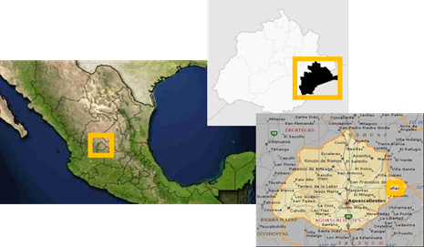

Posicionamiento flotante
La georreferencia: Es definir el lugar en que se encuentra un objeto dentro del espacio fisico, Para hacer esto utilizamos un sistema de coordenadas o una proyeccion geografica. En un sistema de coordenadas se utilizan numero a los que le llenan asi.
Clave geo-estadisticas del municipio del Llano
La georreferenciación nos puede ayudar a ubicar con presición en un lugar de la Tierra.